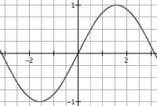

Transcendental Meditation
I got into a conversation with some folks who've been moving a large sophisticated image processing application to Java. They've been getting great performance numbers, much to the surprise of the C crowd in their shop.With one exception: code that invokes sin() and cos() heavily is somewhat slower. They asked me why this was happening. I had a pretty good idea, but I checked with Joe Darcy, our local Floating Point God, and he had this to say:
For many years, the JDK on x86 platforms has used the hardware fsin/fcos x87 instructions in the range [-pi/4, pi/4], a range which encompasses about half of all representable floating-point values. Therefore, in that range the performance of the JDK's transcendental functions should be nearly the same as the performance of the transcendental functions in C, C++, etc. that are using those same fsin/fcos instructions. Benchmarks which focus on testing the trig performance of large values, such as almabench, present a skewed portrait of Java's trigonometric performance. The next question is why don't we just use fsin/fcos over the entire floating-point range? The simple answer is that fsin/fcos can deliver answers that are arbitrarily wrong for the most straightforward way of measuring error in the result.
Every finite real number, no matter how large, has a well-defined value for sin/cos. Ideally, the floating-point result returned for sin/cos would be the representable floating-point number closest to the mathematically defined result for the floating-point input. A floating-point library having this property is called correctly rounded, which is equivalent to saying the library has an error bound less than or equal to 1/2 an ulp (unit in the last place). For sin/cos, writing a correctly rounding implementation that runs at a reasonable speed is still something of a research problem so in practice platforms often use a library with a 1 ulp error bound instead, which means either of the floating-point numbers adjacent to the true result can be returned. This is the implementation criteria the Java Math library has to meet. The implementation challenge is that sin/cos are implemented using argument reduction whereby any input is mapped into a corresponding input in the [-pi/4, pi/4] range. Since the period of sin/cos is pi and pi is transcendental, this amounts to having to compute a remainder from the division by a transcendental number, which is non-obvious. A few years after the x87 was designed, people figured out how to do this division as if by an exact value of pi. Instead the x87 fsin/fcos use a particular approximation to pi, which effectively means the period of the function is changed, which can lead to large errors outside [-pi/4, pi/4]. For example the value of sine for the floating-point number Math.PI is around
1.2246467991473532E-16
while the computed value from fsin is
1.2246063538223773E-16
In other words, instead of getting the full 15-17 digit accuracy of double, the returned result is only correct to about 5 decimal digits. In terms of ulps, the error is about 1.64e11 ulps, over *ten billion* ulps. With some effort, I'm confident I could find results with the wrong sign, etc. There is a rationale which can justify this behavior; however, it was much more compelling before the argument reduction problem was solved.
This error has tragically become un-fixable because of the compatibility requirements from one generation to the next. The fix for this problem was figured out quite a long time ago. In the excellent paper The K5 transcendental functions by T. Lynch, A. Ahmed, M. Schulte, T. Callaway, and R. Tisdale a technique is described for doing argument reduction as if you had an infinitely precise value for pi. As far as I know, the K5 is the only x86 family CPU that did sin/cos accurately. AMD went back to being bit-for-bit compatibile with the old x87 behavior, assumably because too many applications broke. Oddly enough, this is fixed in Itanium.
What we do in the JVM on x86 is moderately obvious: we range check the argument, and if it's outside the range [-pi/4, pi/4]we do the precise range reduction by hand, and then call fsin.
So Java is accurate, but slower. I've never been a fan of "fast, but wrong" when "wrong" is roughly random(). Benchmarks rarely test accuracy. "double sin(double theta) { return 0; }" would be a great benchmark-compatible implementation of sin(). For large values of theta, 0 would be arguably more accurate since the absolute error is never greater than 1. fsin/fcos can have absolute errors as large as 2 (correct answer=1; returned result=-1).
This is one of those area where no matter what we do, we're screwed.
| July 27, 2005 |